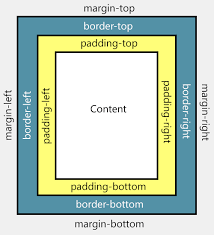
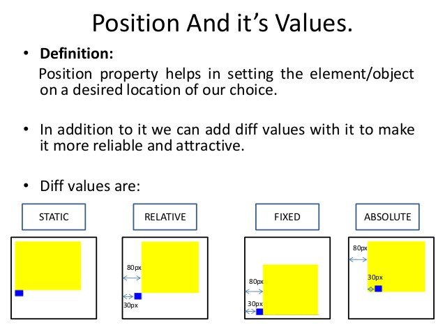

Margins, Border, and Padding
Spacing is difficult and one of the hardest aspects of front end web-design. Firstly the basics, margins, borders and Padding. We'll start from the center out. The padding is the spacing between the content and border as seen in the image above and is an additional clickable area. The Border is the outline of the content + padding and can be customized and styled. The Margins are the final component which are responsible for spacing the element in regards to other elements.
Dimensions

When positioning elements there are many different units that can be used. It is recommended not to use px(pixel), cm as theres are hard coded and not as responsive as setting it in regards to the size of the viewport. Above you can view the relative units to use for a responsive design. ID's are more commonly used for Javascript assigning functions to HTML elements.
Best Practice for Classes and ID's
ID's should be used sparingly, while classes can be used heavily. Classes adapt all elements with a specific class whereas ID can only apply to one specific element. ID's additionally override classes if their styling clashes.
- Universal selector selects all elements
- Type selectors targets element(s) by HTML tag (includes pseudo elements)
- Class selector Attribute selector -targets element(s) by class or attribute, respectively (includes pseudo classes) .profile{CSS declaration }
- ID selector targets an element by id using #titles {Css declaration}
Positioning - Difference between relative, absolute & fixed
Once objects are sorted into boxes they they can be positions using static, relative, fixed or absolute. There are other variables for position: variable, such as sticky, but we'll only touch on these two. static position fixes the position inplace within the other elenents on the screen. Fixed elements will stay in the same position wherever you move your viewport across the page. The Relative too is used in conjunction with absolute. Absolute positions are aligned relative to the object that are labelled relative. I found difficulty using relative and absolute positioning and takes practice and planning.
Inline, Block, vs Block-inline

Once you've planned out the position of containers then how will you elements fit within it? The default for each container p, input, div etc are all different. Inline will place elements inline, block will place them stacked vertically and inline-block will place them horizontally as blocks. Buttons for example are block level elements, and will need an block-inline to ensure they align correctly.